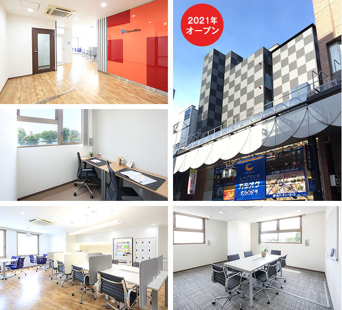
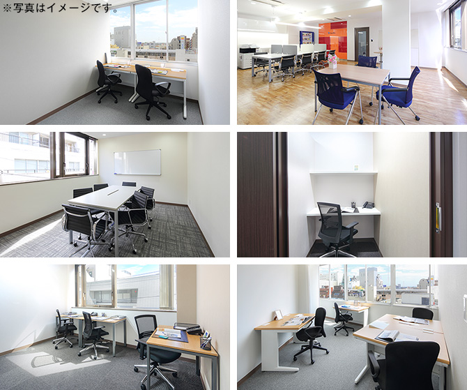

【個室レンタルオフィス】
オープンオフィス盛岡大通
- オフィス詳細
- 周辺ガイド
オープンオフィス盛岡大通がNEW OPEN
オープンオフィス盛岡大通センターは、盛岡市のメインストリートのひとつ、大通りに面したレンタルオフィス・コワーキングスペースです。この大通りエリアは、オフィスビル、商業施設が集中し、様々な業種・業態のビジネスワーカーが集まる活気に溢れたエリアです。金融機関やビジネスホテルも多く、出張者や来客を招くにも最適なエリアです。

オープンオフィス盛岡大通が提供するオフィスサービス
-
 高速インターネット＜光ファイバー＞
高速インターネット＜光ファイバー＞
- 100Mbpsの光ファイバーによるブロードバンド環境をご用意しました。各部屋に配線済みですので、パソコンに繋げばすぐLAN経由で高速インターネットを利用出来ます。
-
 ネットワーク・カラーレーザープリンタ+スキャナー
ネットワーク・カラーレーザープリンタ+スキャナー
- ネットワークを利用して、各お部屋のパソコンから印刷できます。プリンタをご用意いただく必要もございません。
スキャナー機能も搭載しております。
-
 カラーレーザーコピー
カラーレーザーコピー
- フロア内にご用意してあります。カード方式でコピーが出来ますので、小銭の準備が不要です。
-
 ICカードキーによる入室管理
ICカードキーによる入室管理
- 専用ICカードを使ったホテル式のスマートシステムを用いて、セキュリティーを向上させています。
-
 ミーティングルーム（会議室）
ミーティングルーム（会議室）
- 商談・会議にご利用いただける共有スペースをご用意しています。インターネットで簡単に予約をしていただけます。
-
 無線LAN（WiFi）
無線LAN（WiFi）
- 共有スペースとミーティングスペースにて、無線LAN(WiFi)サービスをご利用いただけます。

オープンオフィス盛岡大通の特徴

盛岡の中心エリアのレンタルオフィス
活気溢れる大通沿い
隣接するリージャスにて各種イベント実施
支店、営業所にも最適
24時間利用可能
オフィス周辺のMap
オープンオフィス盛岡大通近隣のスポット
- ■銀行
- 岩手銀行 本店
東北銀行 本店
北日本銀行 本店
みちのく銀行 盛岡支店
みずほ銀行 盛岡支店
七十七銀行 盛岡支店 - ■レストラン
- シャトン （イタリアン）
グランヴヌール （フレンチ）
ミタ イ ミタ （スペイン）
日本料理 桜茶寮 （会席）
すし処 かね田 （寿司） - ■ホテル
- ダイワロイネットホテル盛岡
盛岡グランドホテルアネックス
北ホテル
ホテルロイヤル盛岡
ホテルメトロポリタン盛岡 - ■レジャー
- ライザップ盛岡店
- ■映画館
- フォーラム盛岡
中央映画劇場
オープンオフィス盛岡大通の住所・アクセス
- 住所:
- 岩手県盛岡市大通2-6-8 セントラルガーデンスクエア
- 空港からのアクセス:
- いわて花巻空港からリムジンバスで「盛岡」駅まで約45分
仙台空港からリムジンバスで「盛岡」駅まで約180分
- 電車からのアクセス:
- 「盛岡」駅東口からタクシーで約5分
「盛岡」駅東口からバスで「大通三丁目」バス停まで約3分 「大通三丁目」バス停から徒歩2分
「盛岡」駅東口から徒歩10分 - お車でのアクセス:
- 大通り面す。「大通三丁目」交差点至近
リージャスグループの説明
リージャス・グループは、柔軟なワークスペースを提供する世界最大の企業です。そのネットワークは世界120カ国1,100都市、3300拠点に及びます。会員数は250万人で、業界で成功を収める大小様々な企業や起業家の方々にご利用いただいています。
リージャスは、個室タイプのレンタルオフィス、コワーキングスペースなど多彩なオフィスプラン、近年需要が高まるモバイルワークやバーチャルオフィス、障害復旧サービスの提供を通じ、お客様が予算やワークスタイルに合わせて仕事を行うことができる環境を提供いたします。